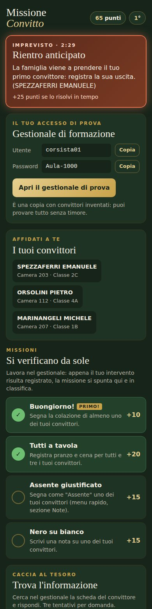
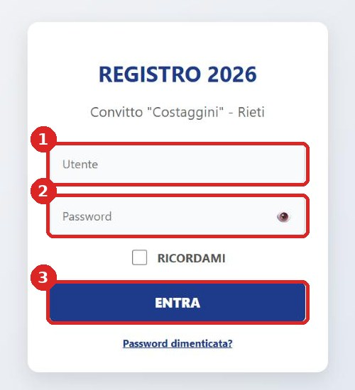
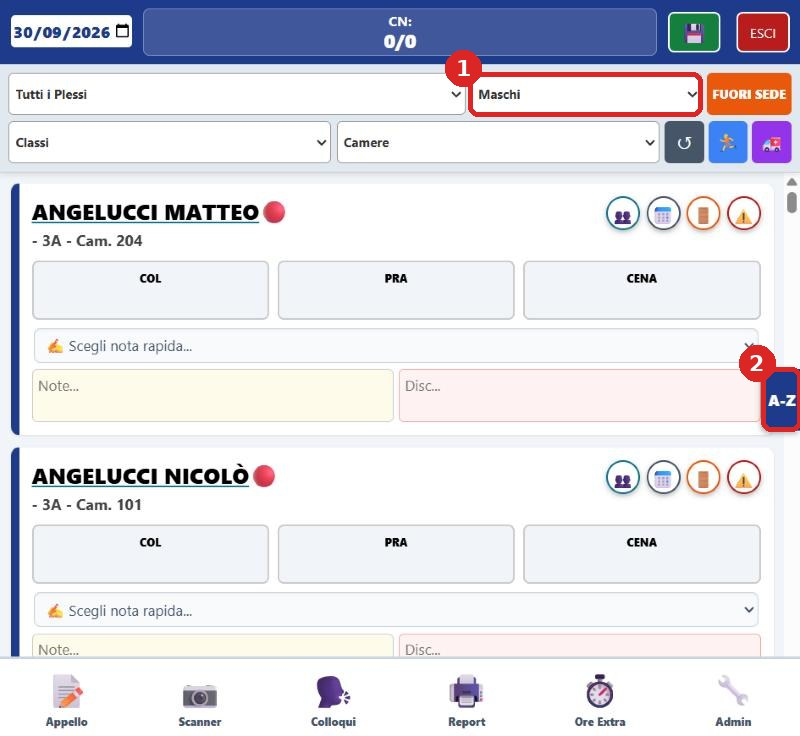
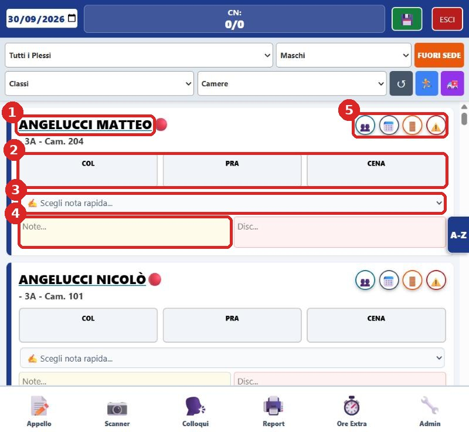
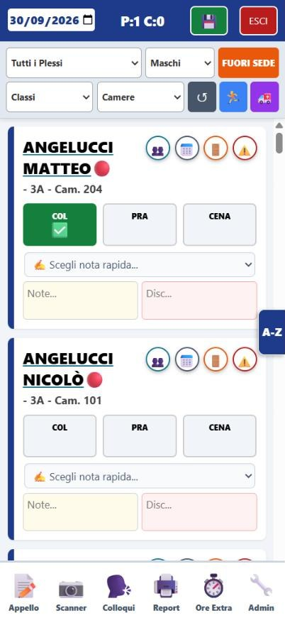
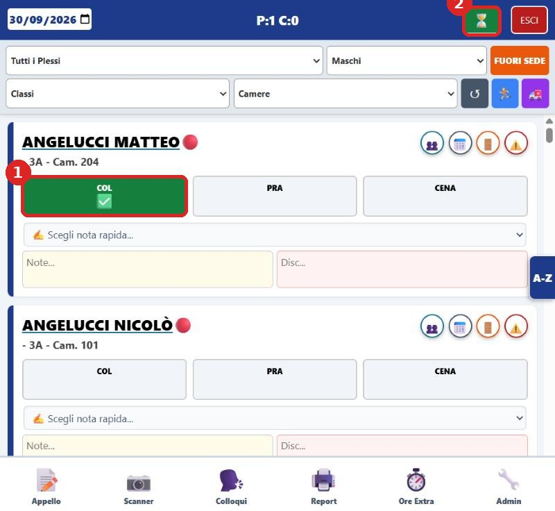
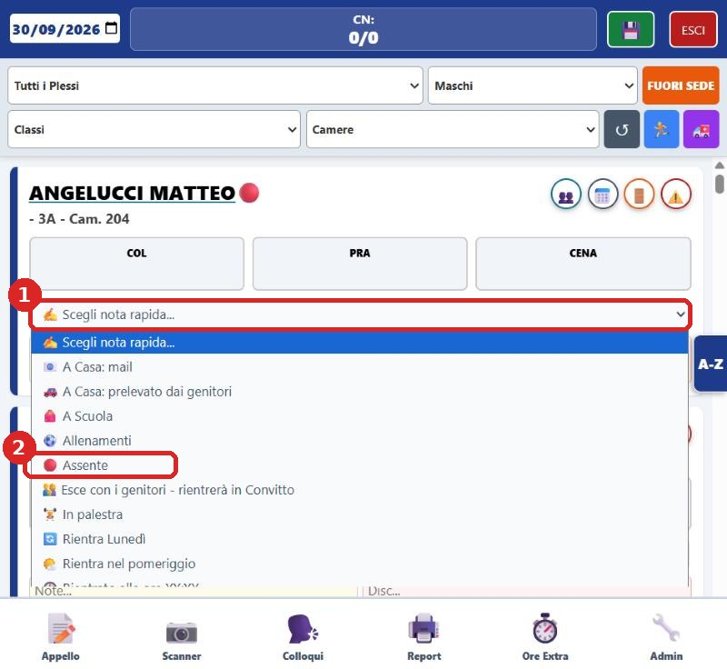
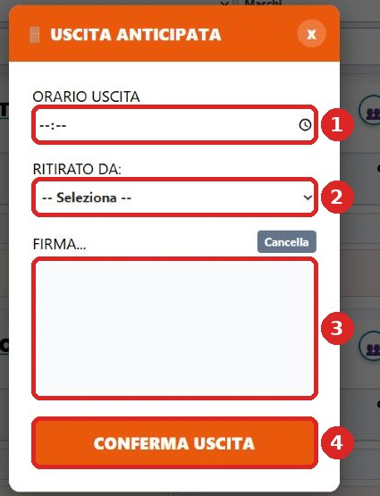
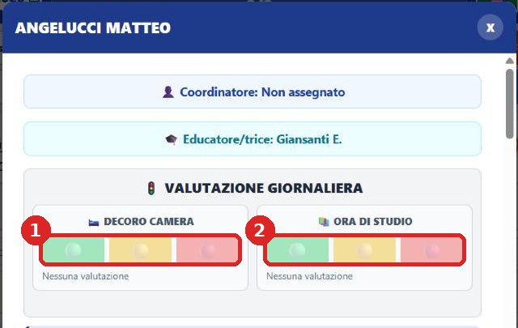
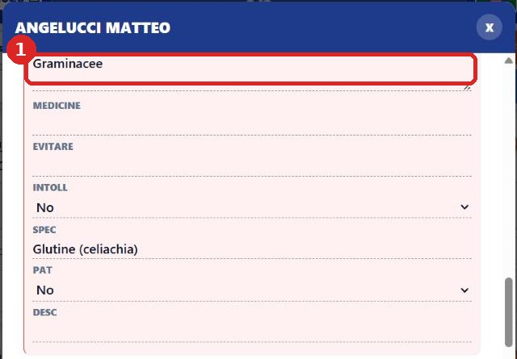

Il gestionale di prova, passo passo
Segui i passi nell'ordine. Ogni passo dice esattamente cosa toccare. Le immagini sono prese dal gestionale di prova: i riquadri rossi numerati indicano dove toccare.
Apri questo sito in incognito
Il gestionale di prova non si apre se sul telefono sono collegati più account Google (compare la scritta "Impossibile aprire il file in questo momento"). La scheda in incognito evita il problema. Si fa una volta sola, all'inizio.
Telefono Android (Chrome)
- Apri l'app Chrome.
- Tocca i tre puntini ⋮ in alto a destra.
- Tocca Nuova scheda di navigazione in incognito. La pagina diventa scura.
- Nella barra in alto scrivi: convitto-costaggini.github.io/formazione e premi Invio.
iPhone (Safari)
- Apri Safari e tocca l'icona delle schede (due quadratini) in basso a destra.
- Scorri e scegli Privata, poi tocca +.
- Nella barra scrivi: convitto-costaggini.github.io/formazione e premi Vai.
Da qui in poi
Resta sempre in questa scheda. I link che tocchi da qui si aprono anche loro in incognito.
Entra nel gioco "Missione Convitto"
- Tocca il pulsante qui sotto.
- Nell'elenco dei nomi tocca il tuo cognome. Il telefono lo ricorderà.
- Vedrai: il tuo utente e la tua password per il gestionale di prova, i tre convittori affidati a te e l'elenco delle missioni.
- Tieni aperta questa pagina: qui vedrai le missioni spuntarsi e il tuo punteggio.

Accedi al gestionale di prova
- Nella pagina del gioco tocca Apri il gestionale di prova. In alternativa usa il pulsante qui sotto.
- Nel campo Utente (1) scrivi il tuo utente, per esempio corsista01.
- Nel campo Password (2) scrivi la tua password, rispettando maiuscole e trattino, per esempio Aula-1000.
- Tocca ENTRA (3).

Trova i tuoi convittori
Il gestionale mostra tutti i convittori, uno sotto l'altro. I tuoi tre nomi li trovi nella pagina del gioco.
- Se un tuo convittore è una ragazza, cambia il filtro in alto da Maschi a Femmine (1). Per i ragazzi rimetti Maschi.
- Per arrivare subito al cognome tocca la linguetta blu A-Z sul bordo destro (2) e poi la lettera iniziale del cognome.
- In alternativa scorri l'elenco con il dito: i cognomi sono in ordine alfabetico.

Com'è fatta la scheda di ogni convittore


Le missioni
Le missioni si fanno solo sui tuoi tre convittori. Dopo ogni azione, entro una decina di secondi la missione si spunta in verde nella pagina del gioco e i punti compaiono sul proiettore. Chi completa per primo una missione prende 5 punti in più.
Buongiorno!
+10 puntiSegna la colazione di uno dei tuoi convittori.
- Trova uno dei tuoi convittori nell'elenco (vedi il passo 4).
- Tocca il riquadro COL sotto il suo nome: diventa verde con la spunta.
- Non serve premere altro: il salvataggio è automatico. In alto a destra compare per un attimo una clessidra, poi torna il dischetto verde: è salvato.

Tutti a tavola
+20 puntiSegna pranzo e cena per tutti e tre i tuoi convittori.
- Per ciascuno dei tuoi tre convittori tocca PRA e CENA.
- Controlla che tutti e sei i riquadri siano verdi.
- Attendi che in alto torni il dischetto verde.
Assente giustificato
+15 puntiSegna come Assente uno dei tuoi convittori.
- Nella scheda del convittore tocca il menu ✍ Scegli nota rapida…
- Nell'elenco che si apre tocca Assente (pallino rosso).
- Attendi il dischetto verde in alto.

Permesso d'uscita
+15 puntiRegistra un'uscita anticipata per uno dei tuoi convittori.
- Tocca l'icona della porta arancione in alto a destra nella scheda del convittore (vedi la figura al passo 4, riquadro 5).
- Nella finestra USCITA ANTICIPATA scegli l'orario (1) e chi lo ritira (2).
- Nel riquadro FIRMA (3) traccia una firma qualsiasi con il dito.
- Tocca CONFERMA USCITA (4).

Nero su bianco
+15 puntiScrivi una nota su uno dei tuoi convittori.
- Nella scheda del convittore tocca il riquadro giallo Note…
- Scrivi una frase qualsiasi, per esempio: Ha studiato con impegno.
- Tocca un punto vuoto della pagina, fuori dal riquadro, e attendi il dischetto verde in alto.
Semaforo
+15 puntiDai una valutazione giornaliera (semaforo) a uno dei tuoi convittori.
- Tocca il nome del convittore (sottolineato): si apre la sua scheda completa.
- In alto trovi VALUTAZIONE GIORNALIERA con due semafori: Decoro camera (1) e Ora di studio (2).
- Tocca uno dei tre colori (verde, giallo o rosso).
- Chiudi la scheda con la X in alto a destra.

Buon rientro
+10 puntiRegistra il rientro del lunedì di uno dei tuoi convittori.
- Questa missione si può fare solo se nella scheda compare il riquadro RIENTRO (di norma il lunedì mattina).
- Se lo vedi, toccalo: diventa verde, come la colazione.
- Se non lo vedi, salta questa missione: non è un errore.
Caccia al tesoro
Nella pagina del gioco trovi quattro domande su convittori non affidati a te, per esempio "In quale camera dorme …?".
- Nel gestionale trova il convittore della domanda (filtro Maschi/Femmine e A-Z, come al passo 4).
- Per camera e classe basta leggere sotto il nome, per esempio 3A - Cam. 204.
- Per allergia e persona delegata tocca il nome e scorri la scheda completa verso il basso.
- Torna al gioco, scrivi la risposta sotto la domanda e tocca Verifica. Hai tre tentativi per domanda.

Gli imprevisti
Ogni tanto il formatore lancia un imprevisto: un riquadro rosso compare sul proiettore e nella pagina del gioco, con il tempo che scorre.
- Leggi il riquadro rosso nella pagina del gioco: tra parentesi c'è il nome del tuo convittore coinvolto.
- Fai l'azione richiesta su quel convittore (uscita, nota "Assente", nota scritta o semaforo), come spiegato nelle missioni.
- Se lo risolvi prima che il tempo finisca, il riquadro diventa verde e guadagni 25 punti.
Se qualcosa non va
Compare "Impossibile aprire il file in questo momento"
Non sei in incognito. Torna al passo 1, apri una scheda in incognito e riparti da lì.
"Utente o password errati"
Copia utente e password esattamente come li vedi nella pagina del gioco: maiuscole, trattino e numeri contano. Se il problema continua, chiama il formatore.
Non trovo un mio convittore
Controlla il filtro in alto: se è impostato su Maschi non vedrai le ragazze, e viceversa. Controlla anche che i filtri Classi e Camere siano vuoti; il pulsante grigio con la freccia circolare li azzera.
Ho fatto l'azione ma la missione non si spunta
Aspetta 10-15 secondi. Controlla di averla fatta su uno dei tuoi tre convittori e che in alto nel gestionale sia tornato il dischetto verde (non la clessidra). Per le note scritte, tocca fuori dal riquadro dopo aver scritto.
Ho chiuso per sbaglio la pagina del gioco
Riaprila dai Link rapidi, sempre in incognito. Se ti chiede di nuovo il nome, toccalo: i punti già fatti restano.
La pagina è bianca o bloccata
Ricarica la pagina (freccia circolare del browser). Se non basta, chiudi la scheda e riapri il sito in incognito.
Ho paura di sbagliare qualcosa
Non puoi rompere niente: è un ambiente di prova con convittori inventati, e alla fine del corso viene tutto azzerato.